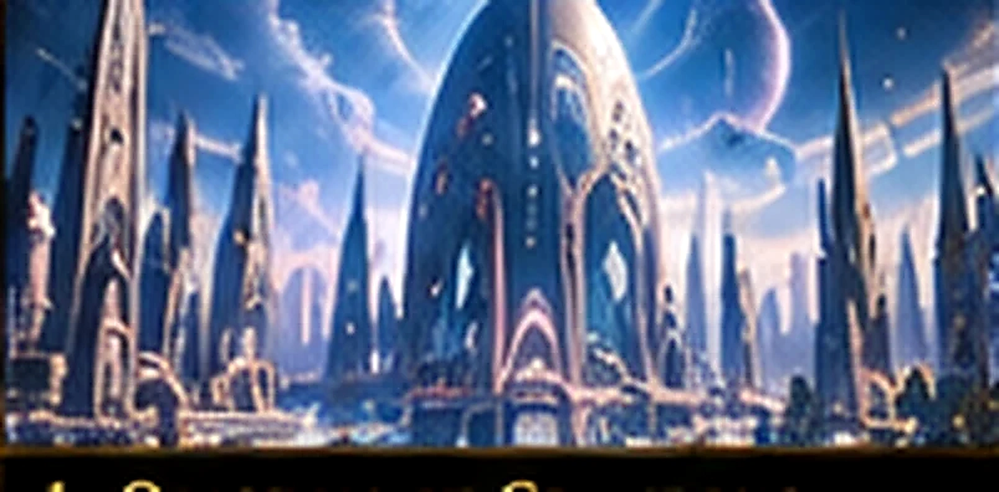
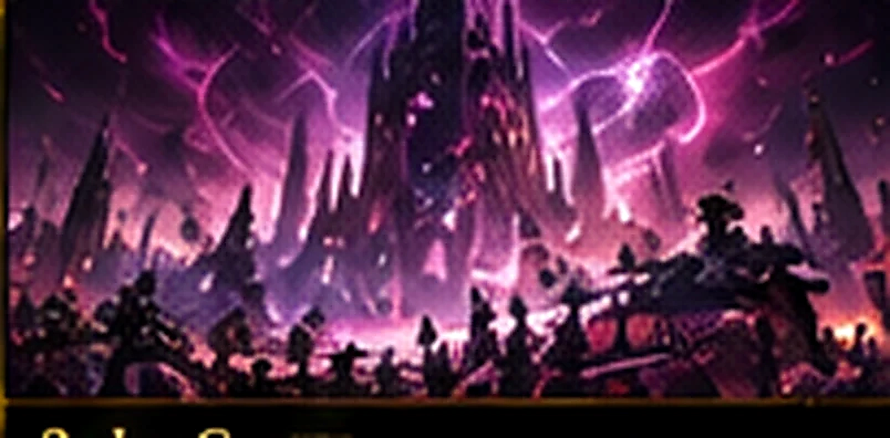
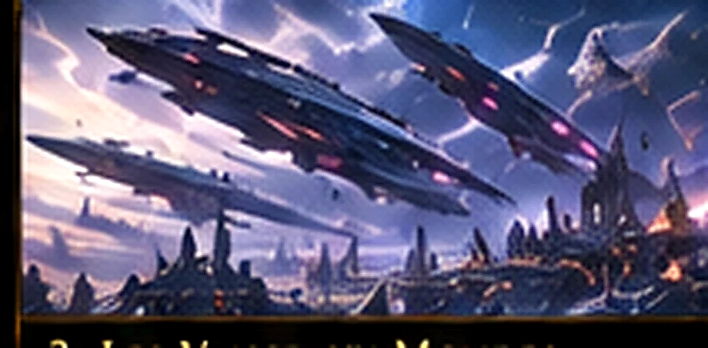
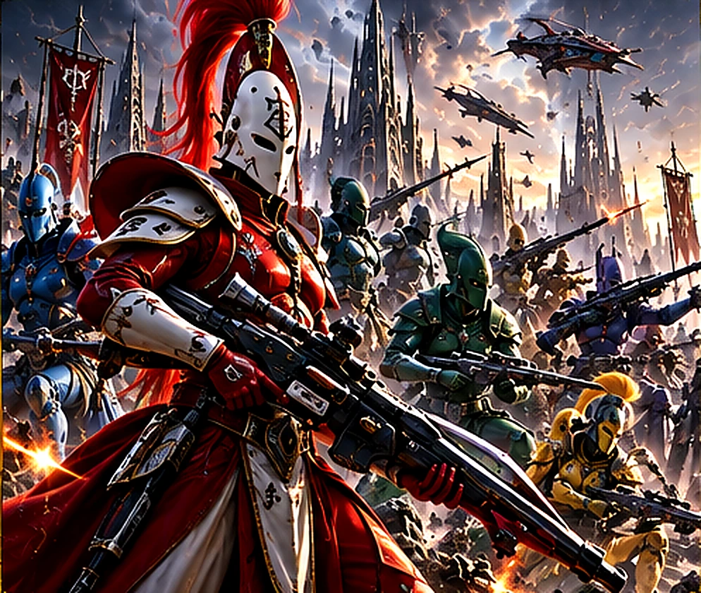
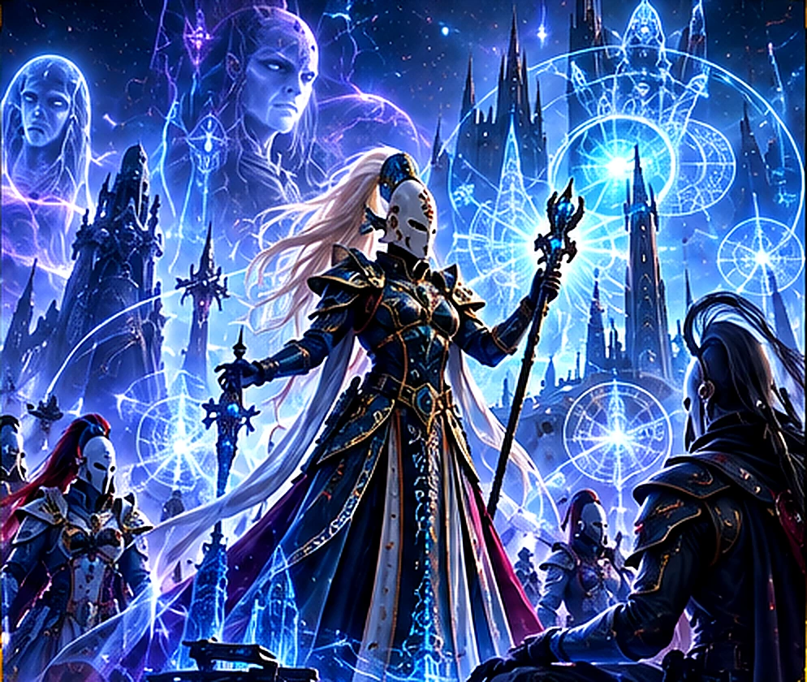
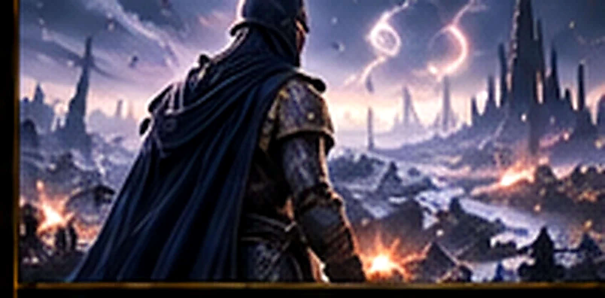

AELDARI

Bien avant l’essor de l’Humanité, les Aeldari dominaient une vaste partie de la galaxie grâce à leur savoir, à leur maîtrise psychique et à leurs technologies raffinées.
LES HÉRITIERS D’UN EMPIRE DISPARU

Bien avant l’essor de l’Humanité, les Aeldari dominaient une vaste partie de la galaxie grâce à leur savoir, à leur maîtrise psychique et à leurs technologies raffinées.
Leur civilisation a connu une catastrophe dont les conséquences façonnent encore leur destin : la Chute.
LA CHUTE ET SES CONSÉQUENCES

La décadence de l’ancien empire a contribué à la naissance de Slaanesh, puissance du Chaos. La catastrophe a ravagé d’innombrables mondes et condamné les survivants à une existence précaire.
Depuis lors, les Aeldari cherchent à protéger leurs âmes et à empêcher la disparition définitive de leur peuple.
LES VAISSEAUX-MONDES

Les Asuryani vivent principalement à bord d’immenses Vaisseaux-Mondes, refuges et patries mobiles qui préservent leurs cultures. Chacun possède ses propres traditions, ses dirigeants et ses priorités.
Ulthwé, Biel-Tan, Saim-Hann et Iyanden illustrent la diversité de ces sociétés, unies par un héritage commun mais rarement par une stratégie unique.
LES VOIES ET LES GUERRIERS ASPECTS

Pour maîtriser leurs passions et leurs talents, de nombreux Aeldari suivent des Voies très codifiées. La Voie du Guerrier donne naissance aux spécialistes appelés Guerriers Aspects.
Banshees Huantes, Scorpions Foudroyants et Dragons de Feu incarnent différentes manières de combattre, souvent coordonnées par des chefs expérimentés.
PROPHÈTES ET DESTINS POSSIBLES

Les Grands Prophètes perçoivent des fragments d’avenirs possibles et tentent de guider leur peuple entre d’innombrables périls. Leurs décisions peuvent paraître mystérieuses aux autres espèces.
Leur art de la guerre privilégie souvent l’anticipation, la vitesse, la précision et le choix du moment décisif.
SURVIVRE DANS LA GALAXIE DU 41e MILLÉNAIRE

Les Aeldari demeurent une puissance influente malgré leur déclin. Leurs Vaisseaux-Mondes affrontent les menaces du Chaos, des Tyranides et des empires rivaux tout en cherchant un avenir pour leur espèce.
Pour Total War: Warhammer 40,000, leur lore suggère des forces spécialisées et mobiles ; les mécaniques exactes seront à vérifier lors des annonces officielles.